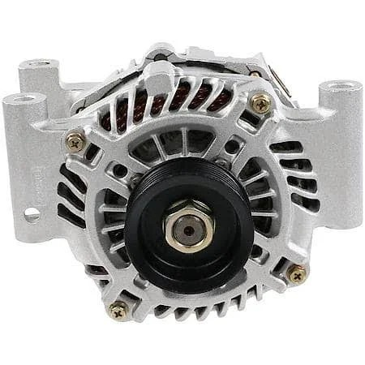
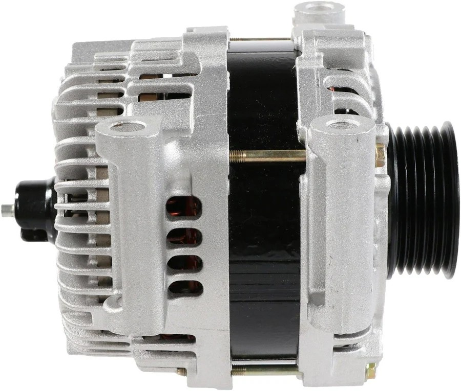
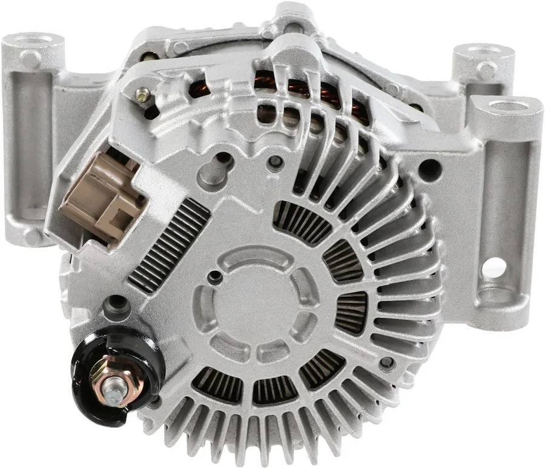
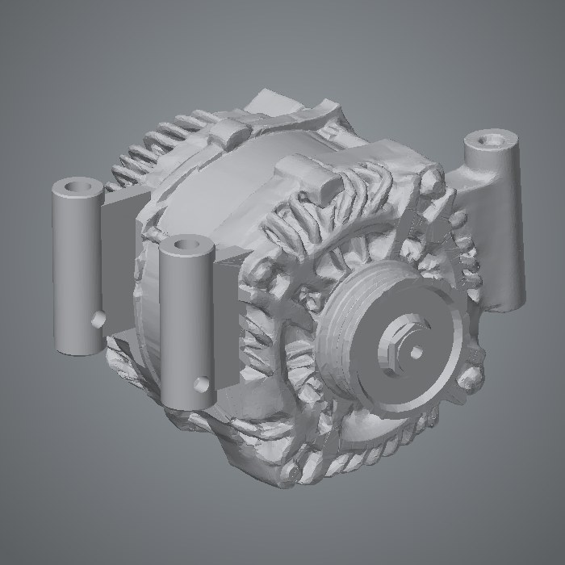
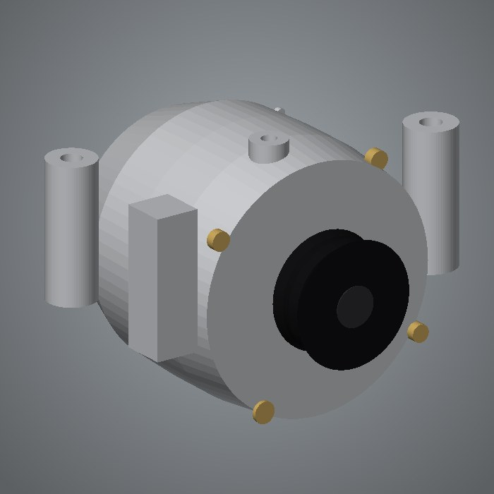
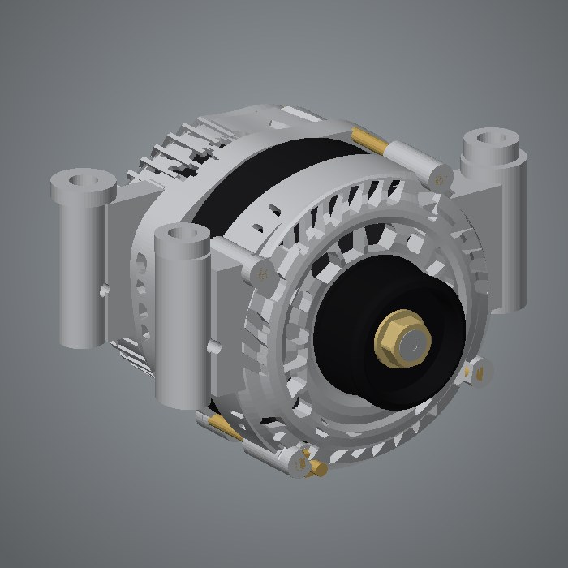

The goal: take three ordinary photos of a part (front, side and back) and get back an accurate 3-D model you can turn in your hand. No scanner and no tape measure. It took three very different approaches to get there, and each one taught the next.
The work was done by AI agents and open-source tools on one computer, with a human reviewing. Chapter 1 was run by OpenAI's Codex; chapters 2 and 3 by Claude, Anthropic's AI model, working as a coding agent. Each chapter names the tools it used.



The entire input, all three times: these three photos.

A neural network guessed the whole part from the photos. It looks right at a glance and is warped up close.
94.2 % outline · 58 % edges · 3.5 mm
Recovered cameras, automatic scale and clean shapes placed by a fitter. Right size, right place, almost no detail.
93.9 % outline · 16 % edges · 2.5 mm
Designed part by part like real CAD, every dimension taken from the photos and every change checked against them.
96.2 % outline · 61 % edges · 2.4 mmAll three models, scored by the same program against the same three photos. Each figure is the average of the front, side and back photo.
| Model | Outline match | Edges matched | Edge precision | Depth error | Triangles |
|---|---|---|---|---|---|
| 1 · Melted | 94.2 % | 58 % | 60 % | 3.45 mm | 140,000 |
| 2 · Simple shapes | 93.9 % | 16 % | 52 % | 2.49 mm | 5,180 |
| 3 · Measured | 96.2 % | 61 % | 68 % | 2.43 mm | 61,888 |